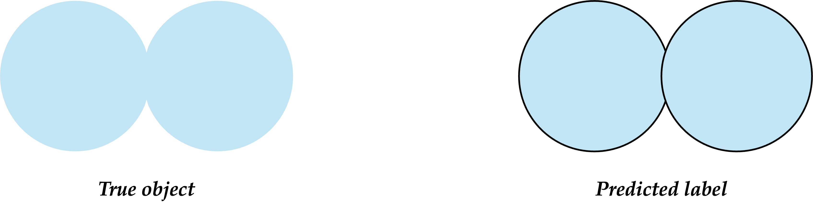
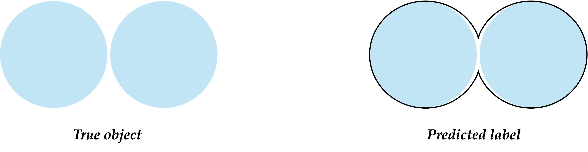
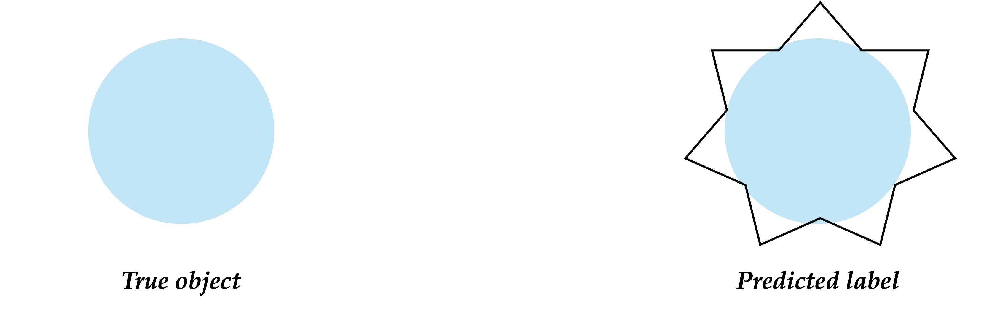
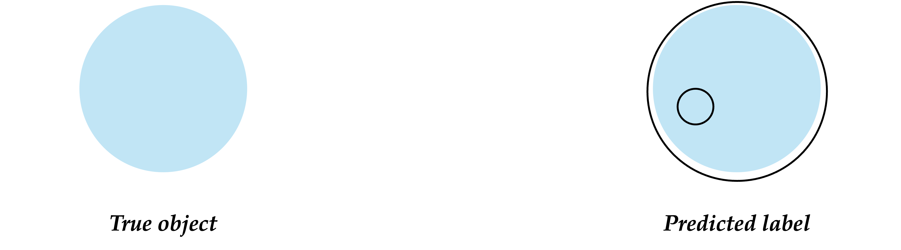
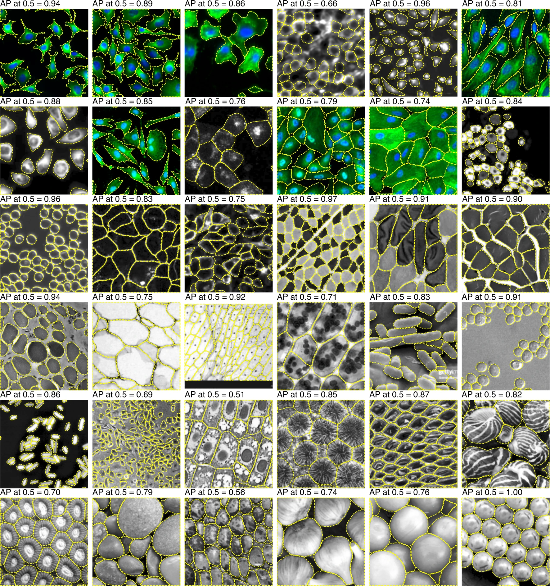

Quality control of segmentation results#
Why Segmentation Quality Matters in Biological Imaging#
Segmentation is a foundational step in microscopy image analysis, whether it’s to quantify cell morphology, assess protein localization, or classify phenotypes. Poor segmentation cascades into poor science:
Biological Inference Depends on Accuracy:#
Cell shape and area are used as proxies for health, cell cycle stage, or treatment effects.
Subcellular segmentation informs protein distribution and co-localization analysis.
Downstream Analysis Tasks Affected:#
Counting: Number of cells, nuclei, or organelles.
Morphometrics: Size, shape, and orientation distributions.
Spatial Context: Distance to neighbors, clustering, localization to boundaries.
Time-lapse Analysis: Tracking errors arise from poor initial segmentation.
Experimental Reproducibility and Interpretability:#
Segmentations must be robust across batches, stains, and acquisition settings.
Quality control is essential for reproducible quantitative biology.
Types of Segmentation Errors in Microscopy#
Over-Segmentation (Fragmentation)#
Single nucleus or cell is split into multiple smaller fragments.
Common in: Aggressive watershed or Cellpose when boundary signals are strong.
Impact: Inflates cell counts; distorts shape descriptors like solidity or eccentricity.

Under-Segmentation (Merging)#
Adjacent cells or nuclei are grouped into a single blob.
Common in: Dense tissues or images with overlapping/poor contrast.
Impact: Loss of individual cell-level information; affects downstream tracking and phenotype calling.

Spurious Detections (False Positives)#
Non-cell regions (debris, staining artifacts, air bubbles) incorrectly labeled as cells.
Impact: Skewed statistics, especially when looking at low-frequency cell types or rare events.
Missed Detections (False Negatives)#
True cells/nuclei are not detected at all.
Common in: Dim or out-of-focus regions, shadowed objects.
Impact: Underestimation in population size; missed biological insights.
Boundary Errors#
Poor delineation of the cell membrane or nuclear edge.
Impact: Affects quantification of membrane-localized proteins, shape analysis, or proximity-based measurements (e.g., cell-cell contact).

Topological Errors#
Holes in the nuclear region, disconnected fragments, broken membranes.
Impact: Miscalculates features like convexity, number of lobes, or cell polarity.

Real-World Impact of QC Failures in Microscopy#
Biological Task |
Example Error |
Consequence |
|---|---|---|
Cell Counting (e.g., DAPI) |
Over-segmentation of elongated nuclei |
Overestimated cell counts |
Organelle Localization |
Missed mitochondria in low-SNR regions |
Incorrect spatial distribution assessment |
Drug Response Screening |
Artifacts misclassified as apoptotic bodies |
False positives in treatment effect |
Tissue Analysis (Histology) |
Domain shift between scanners |
Unusable predictions; poor reproducibility |
Qualitative Evaluation#
Quantitative metrics can miss:#
Systematic biases (e.g., always missing small regions)
Localization errors
Visual artifacts
Useful during development, debugging, and annotation correction
Visual Inspection Techniques#
Overlays
Overlay predicted mask onto the original image (use color-coded transparency)
Helpful to assess boundary alignment and mis-segmentation
Example: 
Tools and Viewers#
Napari:
Python-based interactive viewer
Supports image layers + masks
Plugins for segmentation QC (e.g.,
napari-annotator,napari-skimage-regionprops)
Fiji/ImageJ:
Overlay images and ROIs
Histogram/statistics on masks
QuPath:
For histopathology; robust QC on large slides
3D Slicer / ITK-SNAP:
For 3D volumetric medical image segmentation review
Native Python Libraries:
Matplotlib,scikit-image,open-cv
Best Practices for Visual QC#
Randomly sample across dataset and classes
Use stratified samples for small object classes
Run qualitative QC especially after augmentation or domain adaptation
Always log QC outputs during training for reproducibility
Quantative Evaluation#
Quantitative evaluation provides objective numerical measures of how well a segmentation model performs. These are essential for:
Comparing models
Performing hyperparameter tuning
Ensuring generalizability
Pixel-level#
1. Dice Similarity Coefficient (DSC) / F1 Score Measures overlap between ground truth 𝐺 and prediction 𝑃.
\( DSC = \frac{|G| + |P|}{2|G∩P|} \)
Value range: 0 (no overlap) to 1 (perfect match)
2. Jaccard Index (Intersection over Union - IoU) Measures the intersection (overlap) over the union.
\(IoU= \frac{∣G∪P∣}{∣G∩P∣}\)
Often reported for multiple thresholds (e.g., IoU@0.5, IoU@0.75)
3. Pixel-wise Accuracy Accuracy of correctly classifying the pixel class.
\(Accuracy = \frac{TP + TN}{TP + TN + FP + FN}\)
Not reliable for imbalanced datasets
Object-level and Instance Metrics#
True Positive (TP), False Positive (FP), False Negative (FN)
TP: predicted object matches a ground truth
FP: extra prediction
FN: missed object
Metric Examples:
Precision: \(\frac{TP+FP}{TP}\)
- Recall: \(\frac{TP+FN}{TP}\)
- F1 Score at object level
Mean Average Precision (mAP)
Considers overlap between matched instances using IoU thresholds (e.g., @0.5)
Code Tools for Evaluation#
scikit-learn: precision_score, recall_score, f1_scoremonai.metrics: for HD, ASD, Dice, IoUmedpy.metric: specialized medical metricstorchmetrics: ready-to-use PyTorch metrics
Coding Examples#
# Download Dataset
!wget https://github.com/rkarmaka/Global-BioImaging-Image-Data-2025-Course---India/raw/main/course_material/06182025_day3/data/sample_images.zip
!unzip sample_images.zip
!rm sample_images.zip
--2025-06-17 18:50:17-- https://github.com/rkarmaka/Global-BioImaging-Image-Data-2025-Course---India/raw/main/course_material/06182025_day3/data/sample_images.zip
Resolving github.com (github.com)... 140.82.112.3
Connecting to github.com (github.com)|140.82.112.3|:443...
connected.
HTTP request sent, awaiting response...
302 Found
Location: https://raw.githubusercontent.com/rkarmaka/Global-BioImaging-Image-Data-2025-Course---India/main/course_material/06182025_day3/data/sample_images.zip [following]
--2025-06-17 18:50:17-- https://raw.githubusercontent.com/rkarmaka/Global-BioImaging-Image-Data-2025-Course---India/main/course_material/06182025_day3/data/sample_images.zip
Resolving raw.githubusercontent.com (raw.githubusercontent.com)... 2606:50c0:8001::154, 2606:50c0:8003::154, 2606:50c0:8000::154, ...
Connecting to raw.githubusercontent.com (raw.githubusercontent.com)|2606:50c0:8001::154|:443...
connected.
HTTP request sent, awaiting response...
200 OK
Length: 2079370 (2.0M) [application/zip]
Saving to: ‘sample_images.zip’
sample_images.zip 0%[ ] 0 --.-KB/s
sample_images.zip 100%[===================>] 1.98M 12.7MB/s in 0.2s
2025-06-17 18:50:17 (12.7 MB/s) - ‘sample_images.zip’ saved [2079370/2079370]
Archive: sample_images.zip
creating: /Users/ranit/Research/github/Global-BioImaging-Image-Data-2025-Course---India/course_material/06182025_day3/sample_images
inflating: sample_images/2PRED.tif
inflating: sample_images/1PRED.tif
inflating: sample_images/3.tif
inflating: __MACOSX/sample_images/._3.tif
inflating: sample_images/2.tif
inflating: __MACOSX/sample_images/._2.tif
inflating: sample_images/1.tif
inflating: __MACOSX/sample_images/._1.tif
inflating: sample_images/1GRAY.tif
inflating: __MACOSX/sample_images/._1GRAY.tif
inflating: sample_images/3GRAY.tif
inflating: __MACOSX/sample_images/._3GRAY.tif
inflating: sample_images/2GRAY.tif
inflating: __MACOSX/sample_images/._2GRAY.tif
Qualitatie Evaluation#
import matplotlib.pyplot as plt
from skimage.io import imread
from skimage.measure import label
from skimage.segmentation import mark_boundaries
from skimage.color import label2rgb
import numpy as np
# File names
images = ['1GRAY.tif', '2GRAY.tif']
masks = ['1.tif', '2.tif']
fig, axes = plt.subplots(nrows=2, ncols=4, figsize=(16, 8))
for i in range(len(images)):
# Load image and mask
img = imread(f'sample_images/{images[i]}', as_gray=True)
mask = imread(f'sample_images/{masks[i]}', as_gray=True) > 0.5
# Normalize image for blending
img_norm = (img - img.min()) / (img.max() - img.min())
# Create overlay
labeled_mask = label(mask)
overlay = label2rgb(labeled_mask, image=img_norm, bg_label=0, alpha=0.4)
# Create boundary-marked image
boundary = mark_boundaries(img_norm, mask.astype(int), color=(1, 0, 0)) # Red boundaries
# Plot original, mask, overlay
axes[i, 0].imshow(img, cmap='gray')
axes[i, 0].set_title(f'Image {i+1}')
axes[i, 1].imshow(mask, cmap='gray')
axes[i, 1].set_title(f'Mask {i+1}')
axes[i, 2].imshow(overlay)
axes[i, 2].set_title(f'Overlay {i+1}')
axes[i, 3].imshow(boundary)
axes[i, 3].set_title(f'Boundary {i+1}')
# Clean up axes
for ax in axes.flatten():
ax.axis('off')
plt.tight_layout()
plt.show()
Quantitative Evaluation#
import matplotlib.pyplot as plt
from skimage.io import imread
from skimage.measure import label
from skimage.segmentation import mark_boundaries
from skimage.color import label2rgb
import numpy as np
# File names
images = ['1GRAY.tif', '2GRAY.tif']
masks = ['1.tif', '2.tif']
preds = ['1PRED.tif', '2PRED.tif']
fig, axes = plt.subplots(nrows=2, ncols=3, figsize=(12, 8))
for i in range(len(images)):
# Load image and mask
img = imread(f'sample_images/{images[i]}', as_gray=True)
mask = imread(f'sample_images/{masks[i]}', as_gray=True) > 0.5
pred = imread(f'sample_images/{preds[i]}', as_gray=True) > 0.5
# Normalize image for blending
img_norm = (img - img.min()) / (img.max() - img.min())
# Plot original, mask, overlay
axes[i, 0].imshow(img, cmap='gray')
axes[i, 0].set_title(f'Image {i+1}')
axes[i, 1].imshow(mask, cmap='gray')
axes[i, 1].set_title(f'Mask {i+1}')
axes[i, 2].imshow(pred, cmap='gray')
axes[i, 2].set_title(f'Predicted {i+1}')
# Clean up axes
for ax in axes.flatten():
ax.axis('off')
plt.tight_layout()
plt.show()
import numpy as np
from skimage.io import imread
# Load masks (convert 0/255 to binary 0/1)
gt = imread('sample_images/1.tif', as_gray=True) > 0.5
pred = imread('sample_images/1PRED.tif', as_gray=True) > 0.5
# Flatten for metric calculation
gt_flat = gt.flatten()
pred_flat = pred.flatten()
# Dice Coefficient
intersection = np.sum(gt_flat * pred_flat)
dice = (2. * intersection) / (np.sum(gt_flat) + np.sum(pred_flat))
print(f"Dice Coefficient: {dice:.4f}")
# IoU
union = np.sum(np.logical_or(gt_flat, pred_flat))
iou = intersection / union
print(f"IoU: {iou:.4f}")
Dice Coefficient: 0.8110
IoU: 0.6821